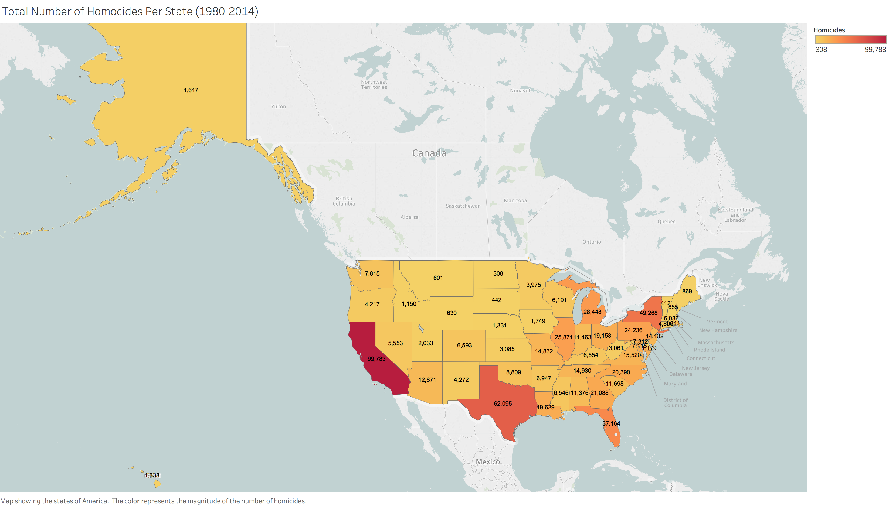
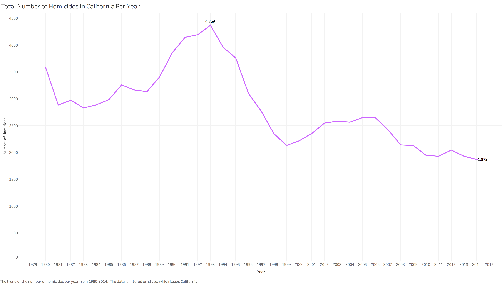
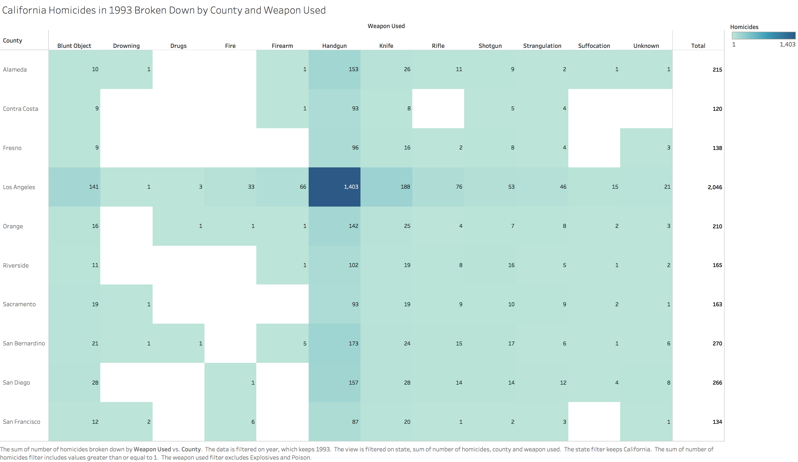
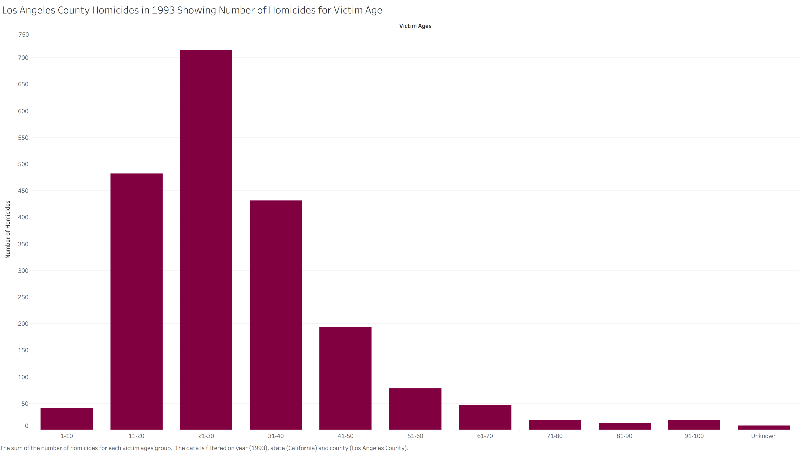

For my first homework assignment in Data Visualization, I was tasked with identifying a meaningful data set, asking questions about it, and visualizing the answers using Tableau. There were many datasets to choose from on Kaggle, but I felt that many of them, although interesting, would not provide me the opportunity to extract significant information. Therefore, I settled on US Homicide Reports from 1980-2014 as my dataset to examine. This dataset contains information reported by the FBI, such as the state and county where the incident took place, the demographics of the perpetrator and victim, etc.
After loading my dataset into Tableau, I decided to kick off my analysis by asking the question: Which state in the US has the highest cumulative homicide victims?
The answer to my question, with quite a large margin, is California. I understand that California is very populous, but I was expecting states like Texas, New York, or Illinois to prevail. In order to create the visualizaton above, I used Tableau's map format. I used the State dimension as the detail view and the Number of Records measure as the color view. I chose the Red-Gold palette because I believed it felt instinctual to indicate the worst state with red, the best state with gold, and every state in between with varying orange colors.
Since the previous question demonstrated that California has the most homicides, I started wondering if the number of homicides were consistent across the years, or if there is some variation in the data. Thus, my next question was: How many homicides are there each year in California?
This chart shows that (a) the number of homicides per year is not consistent and (b) 1993 was the worst year in terms of the number of homicides. This visualization shows a line chart of the Year dimension versus the Number of Records measure. This visualization provides a quick and intuitive way to identify the trend over the years and the worst and best years overall (which are indicated in the visualization).
I started wondering why exactly 1993 was a particularly bad year for homicides. Since California is such a large state, I believed that a good approach to getting to the bottom of this was to explore based on the county that the crime took place in and the weapon that was used. Ultimately, I wanted to know: Which county had the most homicides in 1993 and what weapons were used?
Los Angeles County, by far, had the most amount of homicides, with nearly 10 times as many as the next highest, which was San Berardino County. This visualization highlights the County dimension versus the Weapon Used dimension and the Number of Records measure is used as the color view (using the Blue-Teal palette). I excluded all of the counties that had less than 100 homicides for that year, as well as the weapons with only several occurrences, in the interest of not overcomplicating the visualization. I also included a Total column to allow the viewer to easily examine the total number of homicides in each county shown. Your eye should be immediately drawn to the major culprit in most of the 1993 California homicides - handguns. I found this to be extremely interesting, so I performed an online search of "California homicides 1993". One of the first results was this article, which discusses the escalation of violence in Los Angeles County 20 years ago. The author states that:
"The early 1990s was a time of unprecedented violence in L.A. There were several factors: the emergence of crack cocaine, the rise of gangs, and the flood of high-powered weaponry on the streets. I was covering crime for the Los Angeles Times and spending most of my time in South Los Angeles, the epicenter of this epidemic of violence. In both 1992 and 1993, there were, each year, more than a thousand homicides in the city [...] and almost half of them were committed in South L.A."This article provides the insight needed to connect the high rate of homicides in 1993 to the huge amount of those being committed with handguns. It would make sense that increased gang violence and drug influx on the streets would (unfortunately) lead to this outcome.
As a bonus, after asking and answering the first three questions, I was curious about the victim ages in this violent environment. My final question was: What is the connection of these homicides to the age of the victim?
In order to make the this histogram of the Victim Ages dimension versus the Number of Records measure, I had to create bins for the ages - one for every 10 year spread. The unknown perpetrators were classified with an age of "0", so I grouped them together and changed the bin name to "Unknown". Not too surprisingly, it appears that 21-30 year olds were the predominant victims of the homicides in Los Angeles County in 1993. However, this simple graph is my favorite out of the four, as it triggered my long-lost statistical knowledge. I thought the pattern looked familiar, so I scoured my probability and statistics notes - this is a skewed Poisson Distribution!
I'm glad that I chose the dataset that I did, as I found some surprising results to questions I believed I already knew the answer to. Due to this, I was led down a path of more questions and discoveries that were just as unforseeable. Without the compounding knowledge that these visualizations brought me, I would never have known about the surge of violence in a state that I always assumed was one of the safest to live in. The fact that I was able to unearth a statistical pattern from raw data was a very exciting accomplishment for me. There are many interesting patterns in the world if you take the time to look for them!